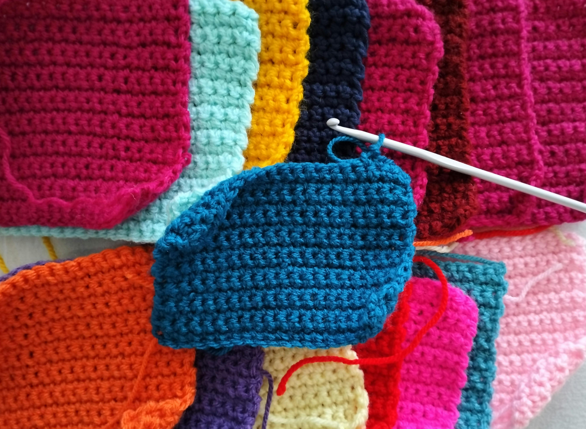
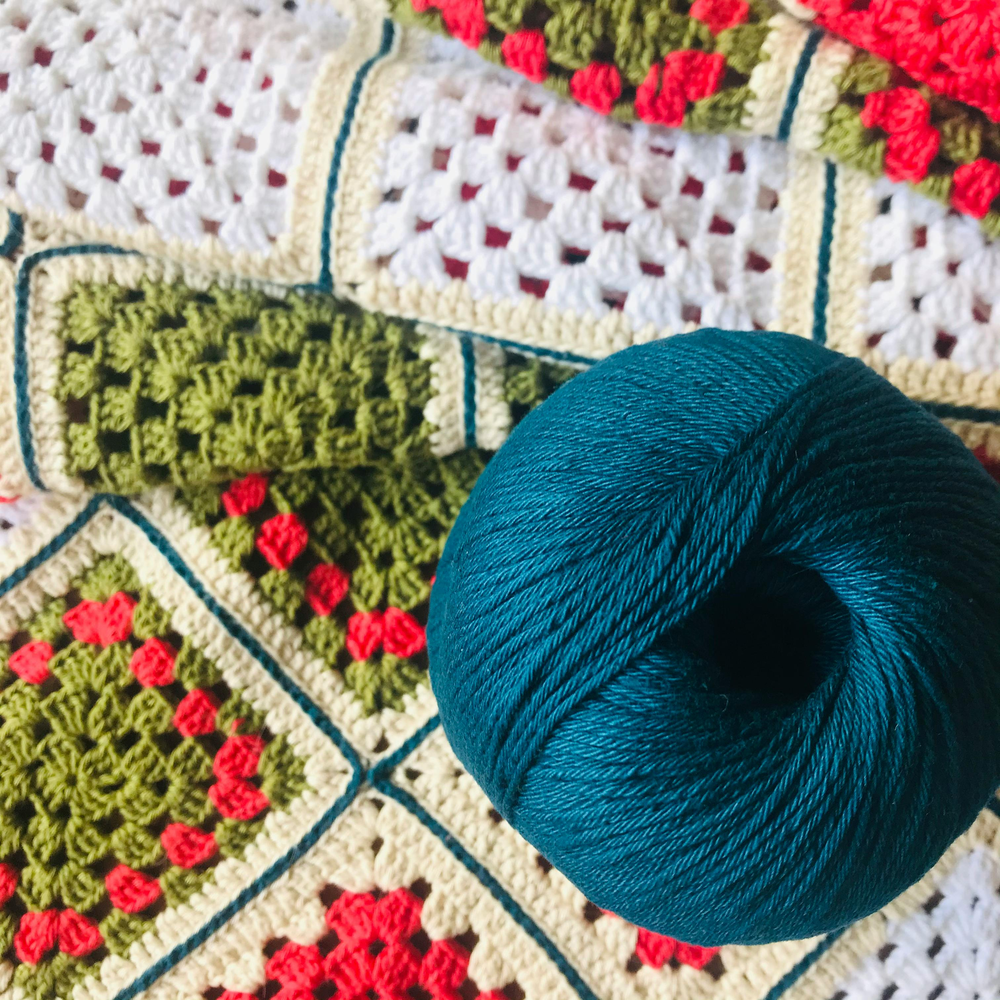
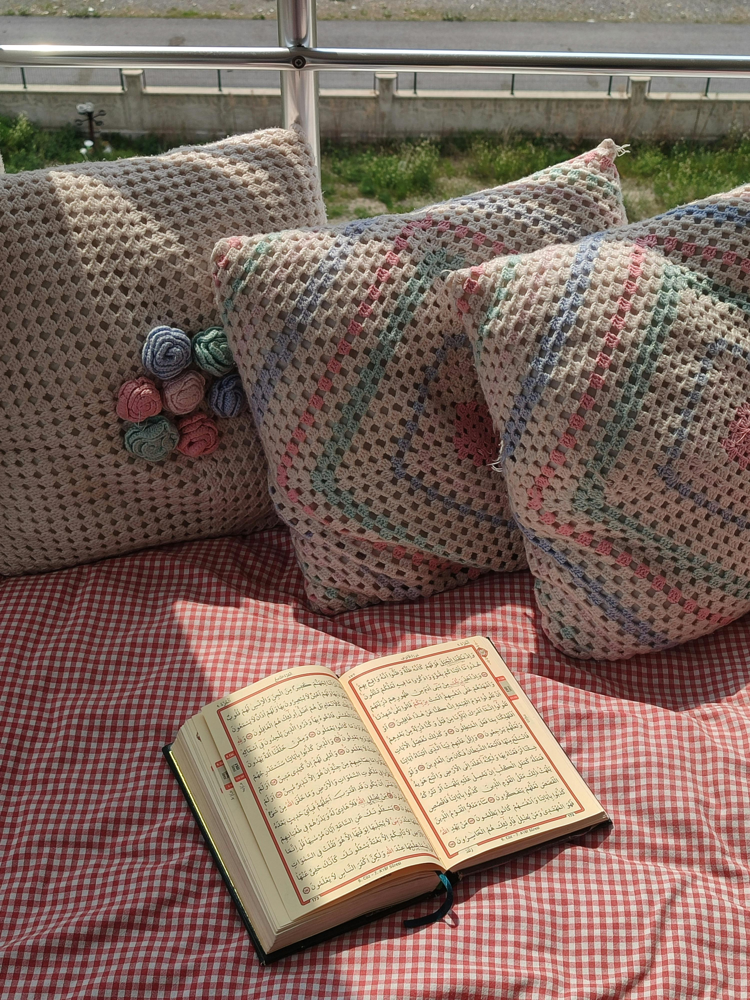
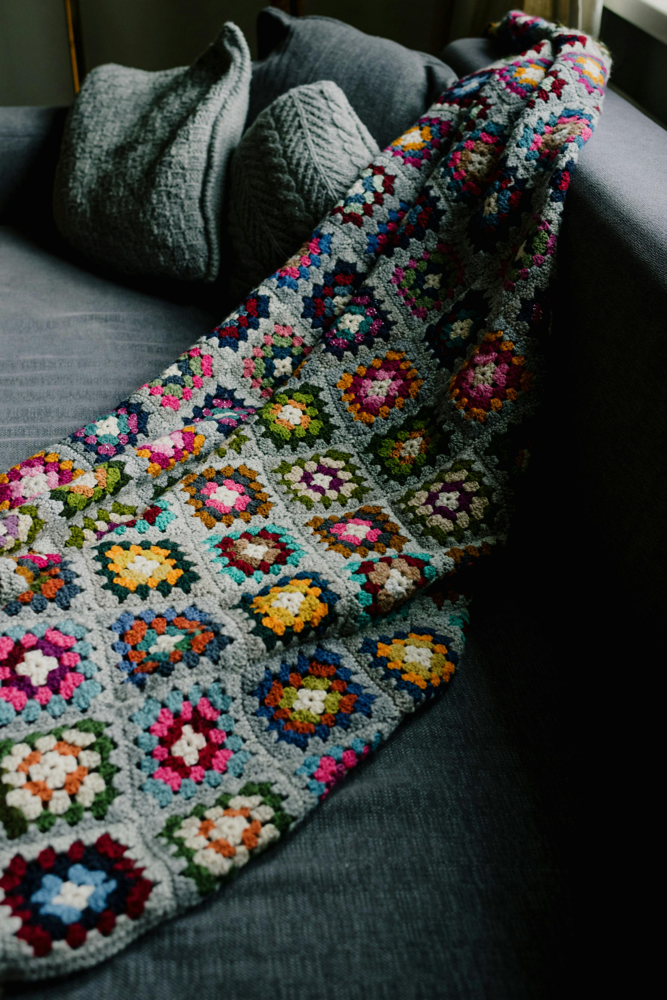
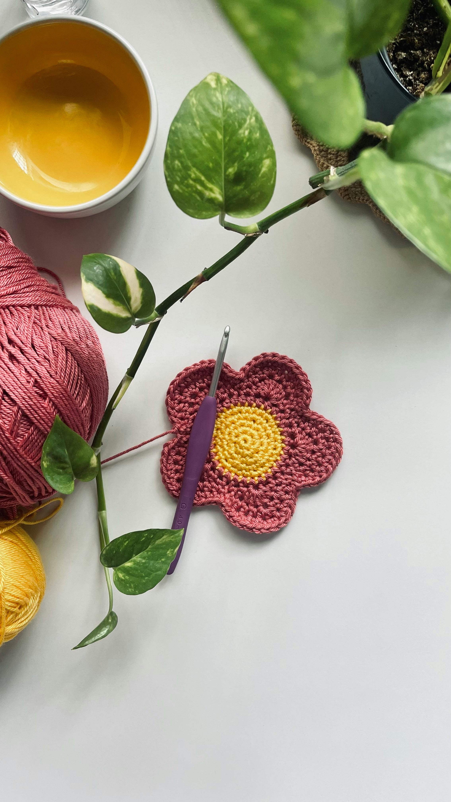
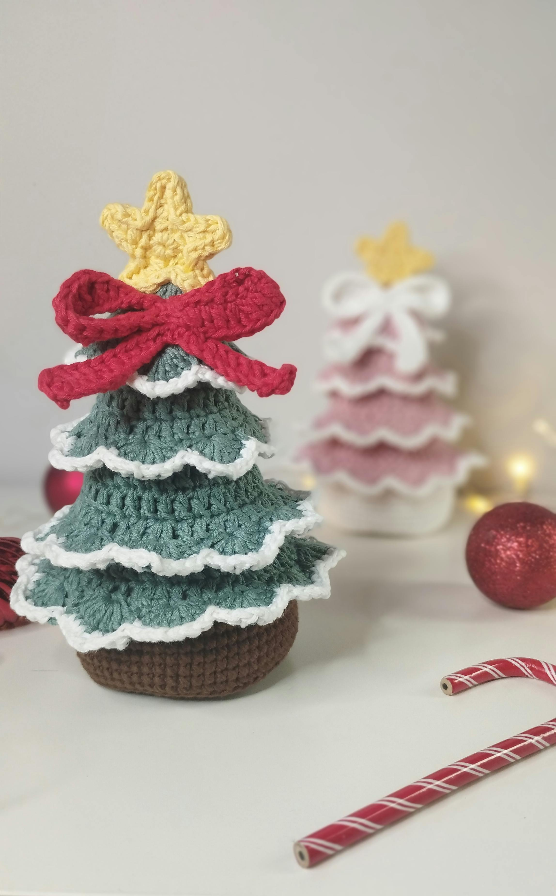

The Versatility of Crochet
Crochet is an extremely versatile craft. For one, just using a single hook and yarn, you can make a very wide variety of fabrics and textures from thick to thin, very sturdy or excellent drape, dense fabric or lace, or many, many different textures.
Another thing that makes crochet extremely versatile is how many projects you can make with it. You can make garments, blankets, accessories, things you can use around the house, things for pets, toys and 3D models, and pretty much anythng between.
Project Idea Images






